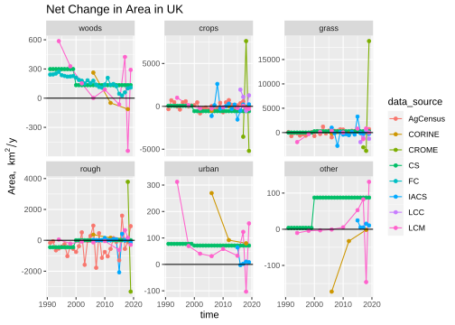
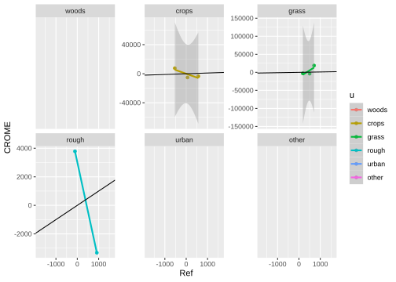

Last updated: 2021-09-19
Checks: 6 1
Knit directory: luct/
This reproducible R Markdown analysis was created with workflowr (version 1.6.2). The Checks tab describes the reproducibility checks that were applied when the results were created. The Past versions tab lists the development history.
The R Markdown file has unstaged changes. To know which version of the R Markdown file created these results, you'll want to first commit it to the Git repo. If you're still working on the analysis, you can ignore this warning. When you're finished, you can run wflow_publish to commit the R Markdown file and build the HTML.
Great job! The global environment was empty. Objects defined in the global environment can affect the analysis in your R Markdown file in unknown ways. For reproduciblity it's best to always run the code in an empty environment.
The command set.seed(20201104) was run prior to running the code in the R Markdown file. Setting a seed ensures that any results that rely on randomness, e.g. subsampling or permutations, are reproducible.
Great job! Recording the operating system, R version, and package versions is critical for reproducibility.
Nice! There were no cached chunks for this analysis, so you can be confident that you successfully produced the results during this run.
Great job! Using relative paths to the files within your workflowr project makes it easier to run your code on other machines.
Great! You are using Git for version control. Tracking code development and connecting the code version to the results is critical for reproducibility.
The results in this page were generated with repository version cb43b02. See the Past versions tab to see a history of the changes made to the R Markdown and HTML files.
Note that you need to be careful to ensure that all relevant files for the analysis have been committed to Git prior to generating the results (you can use wflow_publish or wflow_git_commit). workflowr only checks the R Markdown file, but you know if there are other scripts or data files that it depends on. Below is the status of the Git repository when the results were generated:
Ignored files:
Ignored: _targets/
Ignored: data-raw
Ignored: data/
Ignored: log/
Ignored: output/
Ignored: output_priorHnl_iter600k/
Ignored: output_priorUni_iter360k/
Ignored: renv/library/
Ignored: renv/staging/
Untracked files:
Untracked: slurm/run_mcmc_beta.R
Untracked: slurm/run_mcmc_beta.job
Unstaged changes:
Modified: R/luc_track.R
Modified: R/luct.R
Modified: _targets.R
Modified: _targets_packages.R
Modified: analysis/m_uqdata.Rmd
Modified: renv.lock
Note that any generated files, e.g. HTML, png, CSS, etc., are not included in this status report because it is ok for generated content to have uncommitted changes.
These are the previous versions of the repository in which changes were made to the R Markdown (analysis/m_uqdata.Rmd) and HTML (docs/m_uqdata.html) files. If you've configured a remote Git repository (see ?wflow_git_remote), click on the hyperlinks in the table below to view the files as they were in that past version.
| File | Version | Author | Date | Message |
|---|---|---|---|---|
| html | b3d846c | ADCEH | 2021-09-14 | Data source exclusions target added |
| html | 72919f2 | ADCEH | 2021-08-20 | Build site. |
| Rmd | 1ea3ad7 | ADCEH | 2021-08-20 | Updating index |
| html | 1ea3ad7 | ADCEH | 2021-08-20 | Updating index |
| html | 9a3642a | ADCEH | 2021-08-19 | Build site. |
| Rmd | 0b3b4e1 | ADCEH | 2021-08-19 | Adding data uncertainty text |
The Tracking Land-Use Change project uses a data assimilation approach to combining different data sources. Several different data sources provide observations of the transition matrix \(B\), as well as net and gross change in area of each land use (\(D, G, L\)). The current (WP-A) method treats all data sources as equally uncertain, and assumes the same relative error for all observations. However, in reality, we know that these data sets have different levels of uncertainty: some data sets are closer to direct observations, are more plausible, and we have greater faith in these. We want to reflect this in the methodology by quantitatively associating different uncertainties with each data set. This is straightforward in principle, but potentially complicated in practice, for the following reasons.
We can consider increasing levels of detail:
variable-specific uncertainties (i.e. different for \(B, G, L\) & \(D\))
data source type-specific uncertainties (i.e. different for ground-based vs EO data)
data set-specific uncertainties (i.e. different for CS, IACS, LCM etc.)
land-use type-specific uncertainties (i.e. different for woods, crops, grass etc.)
time-specific uncertainties (i.e. different for 1990, 2000 ... 2019)
Rather than continuous data with a simple \(\sigma\) error term, the \(B\) observations are count data in a 6 x 6-way classification. When considering land-use change, we need to compare the 36 elements of this classification from one data source with another (or the truth), so we have a 36 x 36 error matrix (or "confusion" matrix). This matrix has two distinct types of errors that we ideally want to distinguish: false positives and false negatives, or "user"/"commission" and "producer"/"omission" error/accuracy, in the EO terminology.
None of the data sources represents absolute truth, and we have no clear reference data set against which to calibrate.
The data sources are assimilated in the Bayesian method in the likelihood function, which includes a term \(\sigma^{obs}\), representing the standard deviatation in the probability density function for the observation. The observation is thus not assumed to be the true value, but subject to errors which make it deviate from this. Uncertainty is thus represented by the magnitude of \(\sigma^{obs}\) - large values of \(\sigma^{obs}\) represent high uncertainty. For each observation, a likelihood is calculated, assuming that measurement errors show a Gaussian distribution and are independent of each other. In mathematical notation, the likelihood of observing the area changing from land use \(i\) to land use \(j\), \(\beta_{ij}^{\mathrm{obs}}\), is
where \(\beta_{ij}^{\mathrm{pred}}\) is the corresponding prediction, and \(\sigma_{ij}^\mathrm{obs}\) is the uncertainty in the observation. There are analagous terms for \(G, L\) and \(\Delta A\) which can all be multiplied. For example, the term for the likelihood of observing the net change in land use \(u\), \(\Delta A_{u}^{\mathrm{obs}}\), is
We currently assume that relative measurement uncertainty is the same for all observations, i.e. a constant proportion of the observed \(y\) value. Thus, observations of large areas come with larger absolute uncertainty. The question now is how to estimate more specific uncertainties \(\sigma^\mathrm{obs}\) for the different data sources, if not specific for each individual observation. We thus need to examine the basis for specifing these uncertainties, based on a proper quantitative analysis.
A pre-cursor step is to define a reference data set with which we compare each data source, in the absence of ground-truth data. We could subjectively decide on a reference data set which we believe to be the most plausible or closest to the truth, based on judgement and prior knowledge. Some subjectivity is inevitable here, and would need to be justified and explicit. An alternative would be a version of the "leave-one-out" cross-validation idea: each data source is tested against all the other remaining data sources. With some subjective weighting applied to the data sources, the two ideas could be combined.
We consider here some options for improving the representation of data set-specific uncertainty in the methodology. These are in increasing order of complexity, and are not mutually exclusive.
Most simply, we could base all \(\sigma^\mathrm{obs}\) on the "lowest common denominator" data set, the time series of net area change \(\Delta A\). Irrespective of higher levels of detail, all data sources produce estimates of \(\Delta A\). If we define a reference data set, we can calculate a metric of agreement with this for all other data sets. Suitable metrics would be root-mean-square error (RMSE), mean-absolute error (MAE) and/or the correlation coefficient. We can use this metric as a scaling factor in estimating \(\sigma^\mathrm{obs}\), such that data sources with poor agreement receive high \(\sigma^\mathrm{obs}\) (high uncertainty). Some subjectivity would come into deciding on the reference data set, which metrics to use, and the absolute values of \(\sigma^\mathrm{obs}\), but the relative uncertainties (and therefore weighting) would be based quantitatively on data. Extending this approach to \(G\) and \(L\) data would be straightforward.
where \(p_{o}\) is the relative observed agreement with the reference data (the number of grid cells correctly classified), and \(p_{e}\) is the hypothetical probability of chance agreement (calculated from the products of the confusion matrix row sums and columns sums). With perfect agreement,\(\kappa = 1\); with no agreement beyond what would be expected by chance, \(\kappa = 0\). This gives a more robust measure than simple percentage agreement, with a convenient scaling. \(\kappa\) does not translate into an exact value for \(\sigma^\mathrm{obs}\), but is clearly related. We can therefore use \(\kappa\) as a scaling factor in estimating \(\sigma^\mathrm{obs}\), such that data sources with low \(\kappa\) values (poor agreement) receive high \(\sigma^\mathrm{obs}\) (high uncertainty). The same elements of subjectivity come into this approach, but the quantity of data and level of detail used is greater. If we have the predictive probabilities associated with each prediction, we can plot the "receiver operating characteristics" graph or ROC, and also the Area Under the Curve (AUC). This metric has several theoretical advantages, but is more complex to calculate.
This then calculates the likelihood of the observed change from land use \(i\) to land use \(j\), given that the true value is \(\beta_{ij}^{\mathrm{pred}}\), and with given false positive and false negative rates \(F_P\) and \(F_N\), and uncertainty \(\sigma_{ij}^\mathrm{obs}\) in the observation. This approach can be implemented in increasingly complex ways:
estimating the false positive and false negative error rates based on some set of confusion matrices, and thereafter assuming them to be fixed and constant for a given data source;
as above, but calculating false positive and false negative error rates specific to each type of land-use change (i.e. \(F_{Pij}\) and \(F_{Nij}\)), and potentially vaying in time;
including the false positive and false negative error rates as unknown parameters to be calibrated, along with the \(B\) and \(\sigma^{\mathrm{obs}}\) values. This is the most sophisticated solution, as it properly represents the fact that these are not truly known, and allows the values to be an emergent property of the data, given prior information, rather than imposing our guesses. The exact number of these parameters to estimate could vary as above, whether specific to each data source, type of land-use change, and point in time.
We can apply option 1 in its simplest form by basing the scaling factor for \(\sigma^\mathrm{obs}\) on the net area change \(\Delta A\). We define the reference data set as the June Agricultural Census data for crops, grass and rough, and the FC data for forests. The table below shows two metrics, the RMSE and the correlation coefficient. We combine these in a multiplicative way (using \(1/(r^2+1)\)) to give a single scaling factor for \(\sigma^\mathrm{obs}\) ("sigma_scaling" in the table). The ranking shows that IACS has the lowest uncertainty and the Land Cover Crop Maps has the highest (bearing in mind all the imperfections in the reference data). This produces a quantitative means of accounting for the different relative uncertainties in these data sources.

| RMSE | r2 | sigma | Fp | Fn | |
|---|---|---|---|---|---|
| AgCensus | 0.0000 | 1.0000000 | 164.0017 | 0 | 0 |
| FC | 0.0000 | 1.0000000 | 164.0017 | 0 | 0 |
| CORINE | 497.1706 | 0.3402599 | 328.0034 | 0 | 0 |
| CS | 540.1346 | 0.2335046 | 414.0106 | 0 | 0 |
| LCM | 703.8324 | 0.1023783 | 631.7752 | 0 | 0 |
| IACS | 1118.9417 | 0.0397577 | 1074.4551 | 0 | 0 |
| LCC | 1340.3314 | 0.1350960 | 1159.2580 | 0 | 0 |
| CROME | 7899.3774 | -0.0819340 | 8546.6052 | 0 | 0 |
An example is shown below.
`geom_smooth()` using formula 'y ~ x'Warning: Removed 178 rows containing non-finite values (stat_smooth).Warning in qt((1 - level)/2, df): NaNs producedWarning: Removed 178 rows containing missing values (geom_point).Warning in max(ids, na.rm = TRUE): no non-missing arguments to max; returning
-Inf
Computation time (excl. render): 2.383 sec elapsed
sessionInfo()R version 4.0.0 (2020-04-24)
Platform: x86_64-pc-linux-gnu (64-bit)
Running under: CentOS Linux 7 (Core)
Matrix products: default
BLAS/LAPACK: /gpfs01/apps/eb/software/OpenBLAS/0.3.9-GCC-9.3.0/lib/libopenblas_zenp-r0.3.9.so
locale:
[1] C
attached base packages:
[1] stats graphics grDevices datasets utils methods base
other attached packages:
[1] ggplot2_3.3.5 units_0.7-2 data.table_1.14.0 tidyr_1.1.3
[5] dplyr_1.0.7 qs_0.25.1 fs_1.5.0 here_1.0.1
[9] tictoc_1.0.1 targets_0.6.0
loaded via a namespace (and not attached):
[1] tidyselect_1.1.1 xfun_0.25 bslib_0.2.5.1
[4] purrr_0.3.4 lattice_0.20-41 splines_4.0.0
[7] colorspace_2.0-2 vctrs_0.3.8 generics_0.1.0
[10] htmltools_0.5.1.1 mgcv_1.8-33 yaml_2.2.1
[13] utf8_1.2.2 rlang_0.4.11 jquerylib_0.1.4
[16] later_1.2.0 pillar_1.6.2 glue_1.4.2
[19] withr_2.4.2 lifecycle_1.0.0 stringr_1.4.0
[22] munsell_0.5.0 gtable_0.3.0 workflowr_1.6.2
[25] stringfish_0.15.2 codetools_0.2-18 evaluate_0.14
[28] labeling_0.4.2 RApiSerialize_0.1.0 knitr_1.33
[31] callr_3.7.0 httpuv_1.6.1 ps_1.6.0
[34] fansi_0.5.0 highr_0.9 Rcpp_1.0.7
[37] scales_1.1.1 renv_0.14.0 promises_1.2.0.1
[40] RcppParallel_5.1.4 jsonlite_1.7.2 farver_2.1.0
[43] digest_0.6.27 stringi_1.7.3 bookdown_0.23
[46] processx_3.5.2 grid_4.0.0 rprojroot_2.0.2
[49] cli_3.0.1 tools_4.0.0 magrittr_2.0.1
[52] sass_0.4.0 tibble_3.1.3 crayon_1.4.1
[55] whisker_0.4 pkgconfig_2.0.3 Matrix_1.3-2
[58] ellipsis_0.3.2 rmarkdown_2.10 R6_2.5.0
[61] nlme_3.1-152 igraph_1.2.6 git2r_0.28.0
[64] compiler_4.0.0